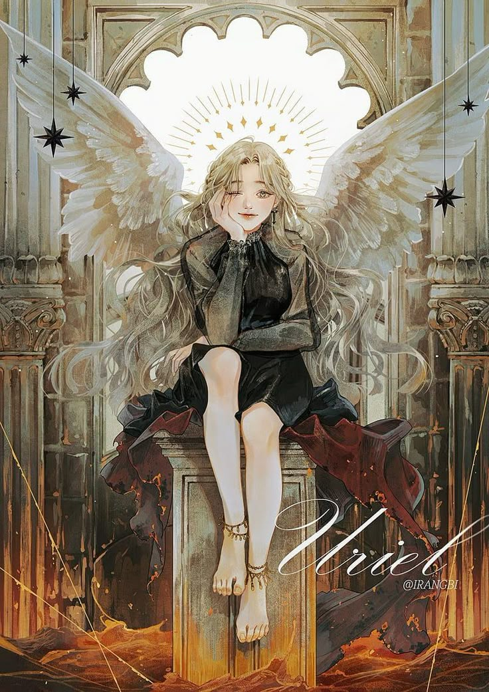

Uriel
Credit: Unknown??? (Contact me if your artwork)
Hello, I'm Uriel, the archangel known as the "Demon-like Judge of Fire" from the Eden nebula, embodying Absolute Good. I've steadfastly supported Kim Dokja and Yoo Joonghyuk, and I proudly sponsor Jung Heewon.